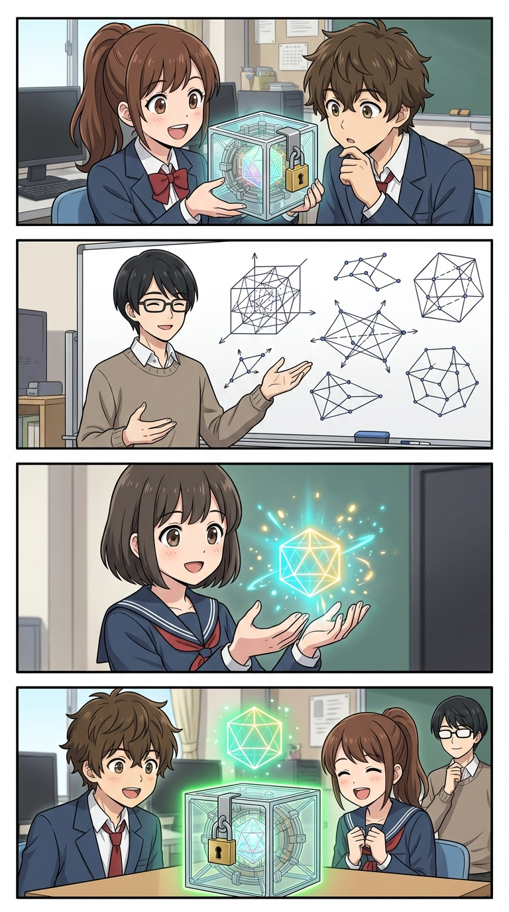
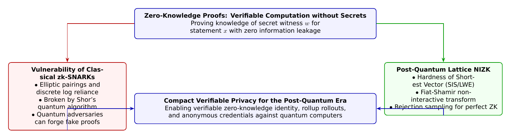

🎨 4コマ漫画挿絵（文字なし）
AI高解像度生成
▲ 【挿絵】青葉台高校 情報科学部＆帝都科学大学サイバーディフェンス・ラボでの実践シーン
💬 4コマ漫画キャラクターセリフ (Story Dialogue Script)
日・英バイリンガル (JA / EN)[結衣]「それこそが現代暗号の奇跡、『ゼロ知識証明（Zero-Knowledge Proof）』の神髄です！」
[Yui] "That is precisely the mathematical miracle of Zero-Knowledge Proofs (ZKP)!"
[蓮]「量子計算機でも破れない、新しい『耐量子ゼロ知識証明』が必要なんだね！」
[Ren] "So we urgently need post-quantum zero-knowledge proofs resilient against quantum attacks!"
[葵]「対話の往復がいらない非対話型（NIZK）だから、ネットに1行ポンと載せるだけで世界中が納得できるんだ！」
[Aoi] "Because it's non-interactive, posting a single cryptographic token lets the entire world verify without back-and-forth communication!"
[全員]「耐量子ゼロ知識証明が、プライバシーと信頼が両立する究極のデジタル社会を創る！」
[All] "Post-quantum zero-knowledge proofs forge the ultimate digital society where privacy and trust unite!"
📖 小説本文
冬の澄みきった夕空が広がる青葉台高校の情報科学部室。黒板には、白石結衣によって精緻な多次元幾何学の格子点（Lattice Points）と、複雑な多項式が描かれていた。
机の上には、橘葵が持ってきた透明なアクリル製のパズルボックスが置かれている。頑丈なダイヤル式の南京錠がかけられており、中には金色のメダルが入っている。
「……ねえ結衣ちゃん、本当にそんなことできるの？」
葵が身を乗り出して尋ねた。 「この箱の暗証番号を悠真先輩にも蓮くんにも一切教えないで、でも『葵ちゃんは確かに正しい暗証番号を知っている』って、100%確実に納得させる方法があるって本当？」
「はい、葵先輩」結衣が微笑んだ。「それこそが、1985年にシャフィ・ゴールドワッサー（Shafi Goldwasser）、シルビオ・ミカリ（Silvio Micali）、チャールズ・ラッコフ（Charles Rackoff）が提唱した現代暗号理論の金字塔――**『ゼロ知識証明（Zero-Knowledge Proof: ZKP）』**です」
神崎蓮がタブレットを操作しながら補足する。 「一番有名な例えが『洞窟の扉の合言葉』だよね。証明者（アリス）は検証者（ボブ）に合言葉を一切喋らないけれど、ボブが指定した出口から必ず扉を開けて出てくる試行を何度も繰り返すことで、ボブは『アリスが合言葉を知っている確率が100%に限りなく近い』と確信する」
「そう！ でもね」ドアを開けて入ってきた城崎悠真が、熱いココアの紙コップを置きながら会話に加わった。 「現実のインターネットやブロックチェーン（プライバシーコインやロールアップL2）で使うには、2つの巨大な課題を乗り越えなければならないんだ。一つは**『何回もやり取り（対話）していられないから、1発の暗号文を提示するだけで検証できる非対話型（NIZK: Non-Interactive ZK）にすること』**。そしてもう一つが、**『量子コンピュータ耐性（Post-Quantum Security）』**だ」
「量子耐性……！」葵が目を丸くする。「ブロックチェーンで大流行してる『zk-SNARKs』も、量子コンピュータに破られちゃうの？」
「現在広く普及している多くのzk-SNARKsは、楕円曲線のペアリング写像や離散対数問題に依存しているんだ」悠真が真剣な表情で頷いた。「ショアの量子アルゴリズムを使えば、攻撃者は秘密の証拠（ウィットネス）を持っていなくても、偽の証明（Proof）をいくらでも捏造できてしまう。だからこそ、横浜国立大学SPIRALのNexCrypt Lab（四方順司教授・佐藤慎悟准教授ら）をはじめとする世界の先端暗号学者は、**『格子暗号（Lattice-based Cryptography）』に基づく耐量子NIZK**の数理構成を極限まで探究しているんだ」
---
📊 セキュリティ構造図解 (TikZ LuaLaTeX生成)
国家安全基準・工学図解
▲ 【技術構造図】IPAデジタルスキル標準・国際規格に準拠した仕組みのモデル化